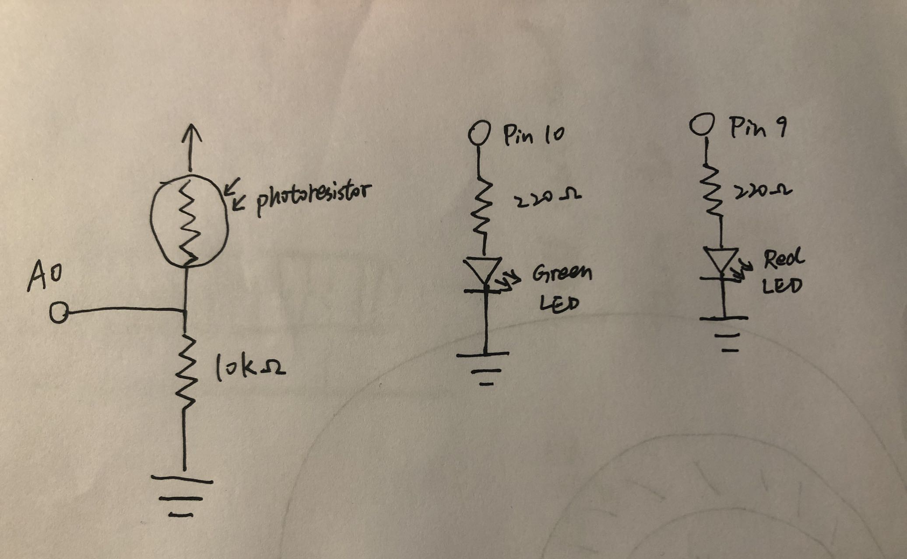
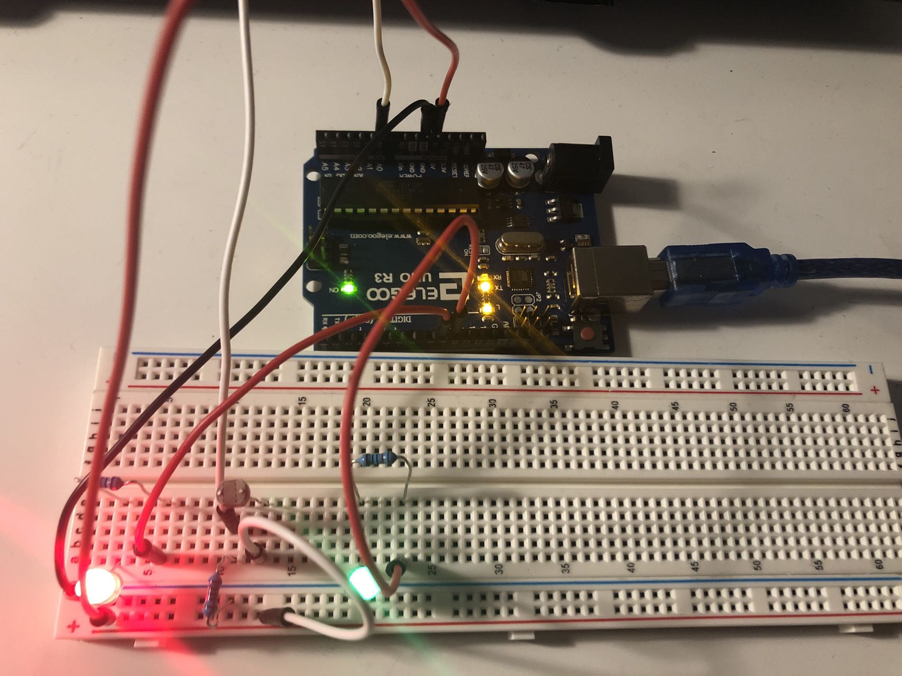

Input&Output

A photoresistor is connected between power and ground, along with analog read port and a 10kΩ resistor.
Two LEDs are connected between port and ground, along with two 220Ω resistor to protect from excessive current.
The photoresistor controls the status of two LEDs.
V = I * R
5V - 1.8V = 20mA * R
3.2V = 0.02A * R
R = 160Ω
Therefore, resistance cannot be smaller than 160Ω. 220Ω resistor works fine!

The circuit is from Pin 10, 9, A0, and 5V power to ground, with a photoresistor, LEDs, and resistors in between.

A GIF showing the operation of the circuit!
The code that makes this work:
// The analog input from the photoresistor determine the status of two LEDs
// The red LED get brighter as more light is absorbed by the photoresistor
// The green LED get dimmer as more light is absorbed by the photoresistor
const int analogInPin = A0; // Analog input pin that the photoresistor is attached to
const int red = 9; // Analog output pin that the red LED is attached to
const int green = 10; // Analog output pin that the green LED is attached to
int sensorValue = 0; // value read from the pot
int redValue = 0; // red value output
int greenValue = 0; // green value output
void setup() {
// initialize serial communications at 9600 bps:
Serial.begin(9600);
}
void loop() {
sensorValue = analogRead(analogInPin); // read the analog in value:
if (sensorValue < 630 && sensorValue > 330) { // if the analog value of photoresistor is in this range
redValue = map(sensorValue, 330, 630, 0, 255);// map it to the range of the red analog out:
greenValue = map(sensorValue, 330, 630, 255, 0);// map it to the range of the green analog out:
analogWrite(red, redValue); // light up red LED to the mapped value
analogWrite(green, greenValue); // light up green LED to the mapped value
}
// print the results to the Serial Monitor:
Serial.print("sensor = ");
Serial.print(sensorValue);
Serial.print(" red = ");
Serial.print(redValue);
Serial.print(" green = ");
Serial.println(greenValue);
// wait 2 milliseconds
delay(2);
}